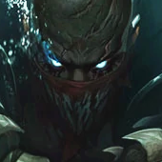
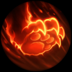
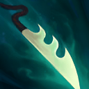
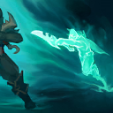

核心裝備
 妖夢鬼刀
妖夢鬼刀 暮色黑刃
暮色黑刃 夜色緣界
夜色緣界 巨蛇鋒牙
巨蛇鋒牙 守護天使
守護天使

以下為本站 7.2d 校正後的標準配置；實戰仍需依敵方陣容調整。





技能優先：Q > E > W
脫離敵方視野時會回復近期受到的部分英雄傷害。派克無法從其他來源增加額外最大生命，額外生命會轉換為物理攻擊。

短按向前刺擊並傷害敵人；長按蓄力後擲出魚叉，把第一個命中的敵人拉向派克。是對線抓人與遊走先手的核心。
進入偽裝並提高跑速。靠近敵方英雄時會被察覺，適合繞過視野、快速遊走或脫戰回復灰色生命。

向前衝刺並留下鬼影；短暫延遲後鬼影回到派克身上，對路徑上的敵方英雄造成物理傷害與暈眩。
躍向十字區域，斬殺低於門檻的敵方英雄；成功斬殺後可短時間再次施放，並讓協助擊殺的隊友取得額外金錢。
1技蓄力拉回 → 3技穿過目標 → 普攻補傷害 → 點燃壓制回復
鉤回後立刻用三技穿過目標，讓鬼影回程路徑覆蓋敵人。隊友距離不足時不要單獨深入。
3技向前衝刺 → 閃現調整鬼影終點 → 1技留住關鍵目標 → 普攻追擊 → 4技進入斬殺線後收尾
三技施放後可用閃現改變派克位置，延長或轉動鬼影回程線，命中原本躲開的敵人。
1技把殘血拉入範圍 → 3技暈眩限制位移 → 4技斬殺第一目標 → 2技加速追下一人 → 再次4技斬殺
先確認敵人出現斬殺標記再施放大絕。第一次成功斬殺後，利用潛行與跑速尋找下一個殘血目標。
利用草叢與視野差蓄力刺骨串叉。短按可快速刺擊，長按則把第一個命中的敵人拉向自己；命中後接溺流鬼影穿過目標，讓留下的鬼影回到派克身上時造成暈眩。換血受傷後先離開敵方視野，血港淹禮會把近期承受的部分傷害轉回生命，不必在低血量時立刻回城。
推完兵線後開幽海深潛沿河道遊走，進入偽裝並提高跑速，從敵方側後方找鉤子角度。派克不適合正面承受火力，應先做視野、抓落單，再等隊友把目標壓入汪洋死域的斬殺線。大絕成功斬殺後可在短時間內再次施放，且能讓協助擊殺的隊友取得額外金錢。
後期不要站在前排與坦克正面互換，應藏在側翼等待殘血目標。先用鉤子或三技打斷關鍵走位，再觀察斬殺標記；沒有標記時不要只為傷害跳入人群。若己方主力被切，可用三技穿過刺客形成暈眩，或用蓄力鉤把敵人拉離後排。
對局名單是本站依英雄機制與目前配置整理的參考，不等同固定勝率。
輔助調整以團隊承傷、解控與保護主力為優先，不為了單一敵人破壞整套功能裝。
觸發：敵方主要輸出集中在射手、物理刺客或普攻型英雄。
標準配置已有守護天使或其他物理容錯，維持即可。
觸發：敵方主要威脅來自法師、AP刺客或大量範圍魔法傷害。
魔提斯深淵的魔防與魔法護盾能讓物理輔助撐過第一輪。
觸發：敵方硬控能直接抓死己方主力，或你進場後會被連續控制。
先購買水銀飾帶取得主動解控，之後再合成水星彎刀；水銀飾帶是合成組件，不是另一件要與水星彎刀互換的成裝。
犧牲部分輸出型傳奇符文，換取韌性與緩速抗性。
提醒：米凱主要替隊友解控；水星彎刀則是物理英雄自我解控，兩者角色不同。
觸發：敵方有大量治療、吸血或回復，讓己方集火很難完成擊殺。
生化龐克鏈鋸之劍提供物攻、生命與技能加速，適合近戰物理角色補重創。
觸發：己方只有一個主要輸出點，且敵方每波團戰都會集中切入他。
這類輔助的主要價值是抓人、遊走與斬殺，不適合硬改成傳統保排裝；用控制與威脅替主力創造空間。
提醒：保排調整看己方陣容，不是看到敵方刺客就把所有功能裝都換成防裝。
7.2a 輔助路第三批正式攻略：技能名稱與核心機制依 Riot Games 台灣《激鬥峽谷》派克英雄頁校正，版本基準採官方 7.2a 更新公告；出裝、符文、召喚師技能、技能順序與對局方向依本站輔助資料整合。Tier 維持本站既有輔助路評級。｜v72：套用瑟雷西 v69 輔助固定母版。
本站於 2026-08-27 依 Patch 7.2d 重新檢查此配置。 Tier、出裝、符文與對局屬於 Wild Rift Guide 的整理與分析，不是 Riot Games 官方推薦；版本改動後會再依官方公告與實戰資料校正。